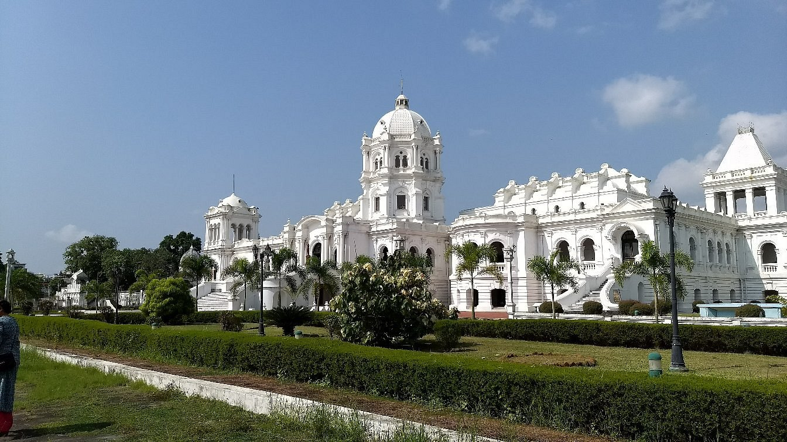
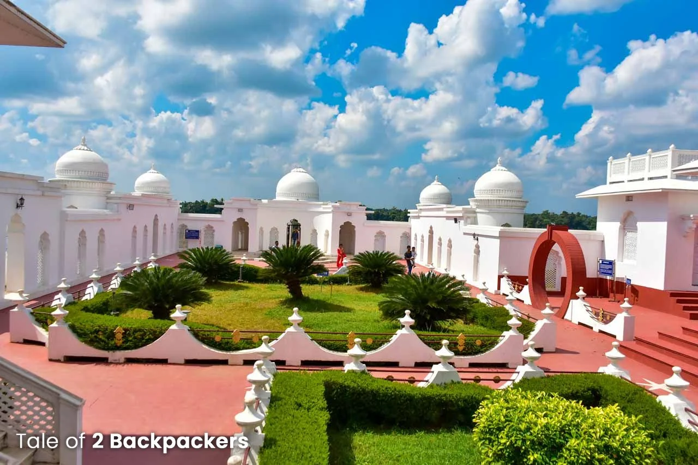
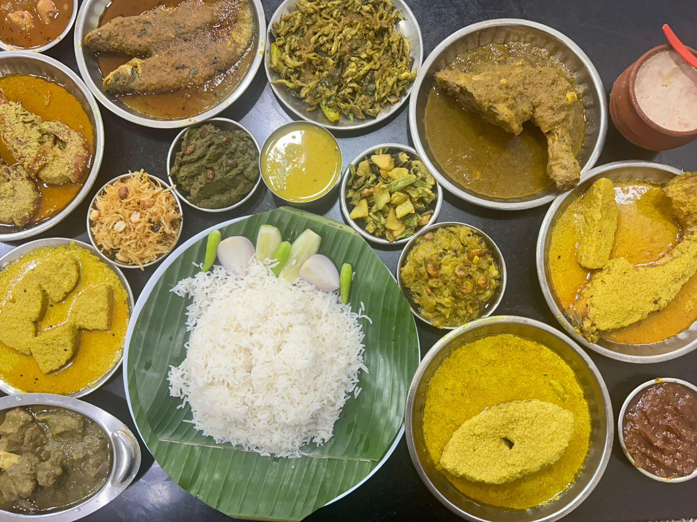

01
Agartala
The cultural capital of Tripura, known for royal temples, colonial institutions, green gardens, and lively handicraft bazaars.

Discover a land of royal Manikya dynasty heritage, pristine forests, rock-carved hills, and vibrant tribal customs in Northeast India.
Explore Tripura ↓Tripura is a serene northeastern state renowned for its royal heritage, lush green hill ranges, ancient rock-cut pilgrimage sculptures, and rich indigenous traditions.
From the grandeur of Ujjayanta Palace in Agartala to the floating Neermahal Water Palace and the mystical Shaivite rock reliefs of Unakoti, Tripura offers an unforgettable offbeat journey.
Key historical landmarks and scenic destinations across Tripura.
The cultural capital of Tripura, known for royal temples, colonial institutions, green gardens, and lively handicraft bazaars.

A grand neoclassical royal residence set amidst Mughal-style gardens and fountains, now housing the state museum.

Eastern India's iconic lake palace, constructed with Hindu-Islamic architecture in the center of Rudrasagar Lake.

An ancient pilgrimage site nestled in forest hills, celebrated for colossal rock-cut bas-reliefs of Lord Shiva.
Tripuri cuisine emphasizes fresh garden produce, fermented fish, aromatic wild herbs, bamboo shoot dishes, and oil-free cooking styles.

Home to 19 distinct tribal communities including Tripuri, Reang, and Jamatia, each preserving unique dialects and customs.
Historic community rituals celebrating nature and deities, featuring the worship of Fourteen Gods in Puran Agartala.
World-renowned Reang tribal dance demonstrating balance and acrobatic grace on pitcher rims and bottles.
Master artisans producing hand-carved bamboo decor, screens, fishing traps, and traditional Risa handloom textiles.
Discover all 28 states, local food recipes, and historic travel destinations.
← Back to All States